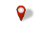
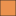

<!doctype html>
<html lang="en">
    <head>
        <meta charset="utf-8">
        <meta http-equiv="X-UA-Compatible" content="IE=edge">
        <meta name="viewport" content="initial-scale=1,user-scalable=no,maximum-scale=1,width=device-width">
        <meta name="mobile-web-app-capable" content="yes">
        <meta name="apple-mobile-web-app-capable" content="yes">
        <link rel="stylesheet" href="css/leaflet.css">
        <link rel="stylesheet" href="css/L.Control.Layers.Tree.css">
        <link rel="stylesheet" href="css/qgis2web.css">
        <link rel="stylesheet" href="css/fontawesome-all.min.css">
        <link rel="stylesheet" href="css/filter.css">
<link rel="stylesheet" href="css/nouislider.min.css">
        <link rel="stylesheet" href="css/leaflet.photon.css">
        <style>
        html, body, #map {
            width: 100%;
            height: 100%;
            padding: 0;
            margin: 0;
        }
        </style>
        <title>BEYOND THE GLOBAL AVERAGES</title>
    </head>
    <body>
        <div id="map">
        </div>
        <script src="js/qgis2web_expressions.js"></script>
        <script src="js/leaflet.js"></script>
        <script src="js/L.Control.Layers.Tree.min.js"></script>
        <script src="js/leaflet.rotatedMarker.js"></script>
        <script src="js/leaflet.pattern.js"></script>
        <script src="js/leaflet-hash.js"></script>
        <script src="js/Autolinker.min.js"></script>
        <script src="js/rbush.min.js"></script>
        <script src="js/labelgun.min.js"></script>
        <script src="js/labels.js"></script>
        <script src="js/leaflet.photon.js"></script>
        <script src="js/tailDT.js"></script>
<script src="js/nouislider.min.js"></script>
<script src="js/wNumb.js"></script>
        <script src="data/Nodata_0.js"></script>
        <script src="data/DifferenceinSafeDrinkingwaterAccess_1.js"></script>
        <script src="data/AreasofFocus_2.js"></script>
        <script>
        var highlightLayer;
        function highlightFeature(e) {
            highlightLayer = e.target;

            if (e.target.feature.geometry.type === 'LineString' || e.target.feature.geometry.type === 'MultiLineString') {
              highlightLayer.setStyle({
                color: 'rgba(255, 255, 0, 1.00)',
              });
            } else {
              highlightLayer.setStyle({
                fillColor: 'rgba(255, 255, 0, 1.00)',
                fillOpacity: 1
              });
            }
        }
        var map = L.map('map', {
            zoomControl:false, maxZoom:28, minZoom:1
        }).fitBounds([[-84.66382218080112,-177.41651003787968],[86.53439303015014,178.81217620561554]]);
        var hash = new L.Hash(map);
        map.attributionControl.setPrefix('<a href="https://github.com/tomchadwin/qgis2web" target="_blank">qgis2web</a> &middot; <a href="https://leafletjs.com" title="A JS library for interactive maps">Leaflet</a> &middot; <a href="https://qgis.org">QGIS</a>');
        var autolinker = new Autolinker({truncate: {length: 30, location: 'smart'}});
        // remove popup's row if "visible-with-data"
        function removeEmptyRowsFromPopupContent(content, feature) {
         var tempDiv = document.createElement('div');
         tempDiv.innerHTML = content;
         var rows = tempDiv.querySelectorAll('tr');
         for (var i = 0; i < rows.length; i++) {
             var td = rows[i].querySelector('td.visible-with-data');
             var key = td ? td.id : '';
             if (td && td.classList.contains('visible-with-data') && feature.properties[key] == null) {
                 rows[i].parentNode.removeChild(rows[i]);
             }
         }
         return tempDiv.innerHTML;
        }
        // modify popup if contains media
        function addClassToPopupIfMedia(content, popup) {
            var tempDiv = document.createElement('div');
            tempDiv.innerHTML = content;
            var imgTd = tempDiv.querySelector('td img');
            if (imgTd) {
                var src = imgTd.getAttribute('src');
                if (/\.(jpg|jpeg|png|gif|bmp|webp|avif)$/i.test(src)) {
                    popup._contentNode.classList.add('media');
                    setTimeout(function() {
                        popup.update();
                    }, 10);
                } else if (/\.(mp3|wav|ogg|aac)$/i.test(src)) {
                    var audio = document.createElement('audio');
                    audio.controls = true;
                    audio.src = src;
                    imgTd.parentNode.replaceChild(audio, imgTd);
                    popup._contentNode.classList.add('media');
                    setTimeout(function() {
                        popup.setContent(tempDiv.innerHTML);
                        popup.update();
                    }, 10);
                } else if (/\.(mp4|webm|ogg|mov)$/i.test(src)) {
                    var video = document.createElement('video');
                    video.controls = true;
                    video.src = src;
                    video.style.width = "400px";
                    video.style.height = "300px";
                    video.style.maxHeight = "60vh";
                    video.style.maxWidth = "60vw";
                    imgTd.parentNode.replaceChild(video, imgTd);
                    popup._contentNode.classList.add('media');
                    // Aggiorna il popup quando il video carica i metadati
                    video.addEventListener('loadedmetadata', function() {
                        popup.update();
                    });
                    setTimeout(function() {
                        popup.setContent(tempDiv.innerHTML);
                        popup.update();
                    }, 10);
                } else {
                    popup._contentNode.classList.remove('media');
                }
            } else {
                popup._contentNode.classList.remove('media');
            }
        }
        var title = new L.Control({'position':'topleft'});
        title.onAdd = function (map) {
            this._div = L.DomUtil.create('div', 'info');
            this.update();
            return this._div;
        };
        title.update = function () {
            this._div.innerHTML = '<h2>BEYOND THE GLOBAL AVERAGES</h2>';
        };
        title.addTo(map);
        var abstract = new L.Control({'position':'topleft'});
        abstract.onAdd = function (map) {
            this._div = L.DomUtil.create('div',
            'leaflet-control abstract');
            this._div.id = 'abstract'
                this._div.setAttribute("onmouseenter", "abstract.show()");
                this._div.setAttribute("onmouseleave", "abstract.hide()");
                this.hide();
                return this._div;
            };
            abstract.hide = function () {
                this._div.classList.remove("abstractUncollapsed");
                this._div.classList.add("abstract");
                this._div.innerHTML = 'i'
            }
            abstract.show = function () {
                this._div.classList.remove("abstract");
                this._div.classList.add("abstractUncollapsed");
                this._div.innerHTML = 'This map shows the average propotion of people accessing safely managed drinking water in the world,  comparing data from 2010 to 2024. A specific focus on 4 countries with decline above 5%, reveling hidden vulnerabilities beyond the global averages.';
        };
        abstract.addTo(map);
        var zoomControl = L.control.zoom({
            position: 'topleft'
        }).addTo(map);
        var bounds_group = new L.featureGroup([]);
        function setBounds() {
            map.setMaxBounds(map.getBounds());
            map.setMinZoom(map.getZoom());
        }
        function pop_Nodata_0(feature, layer) {
            layer.on({
                mouseout: function(e) {
                    for (var i in e.target._eventParents) {
                        if (typeof e.target._eventParents[i].resetStyle === 'function') {
                            e.target._eventParents[i].resetStyle(e.target);
                        }
                    }
                },
                mouseover: highlightFeature,
            });
            var popupContent = '<table>\
                    <tr>\
                        <td colspan="2">' + (feature.properties['CNTR_ID'] !== null ? autolinker.link(String(feature.properties['CNTR_ID']).replace(/'/g, '\'').toLocaleString()) : '') + '</td>\
                    </tr>\
                    <tr>\
                        <td colspan="2">' + (feature.properties['CNTR_NAME'] !== null ? autolinker.link(String(feature.properties['CNTR_NAME']).replace(/'/g, '\'').toLocaleString()) : '') + '</td>\
                    </tr>\
                    <tr>\
                        <td colspan="2">' + (feature.properties['NAME_ENGL'] !== null ? autolinker.link(String(feature.properties['NAME_ENGL']).replace(/'/g, '\'').toLocaleString()) : '') + '</td>\
                    </tr>\
                    <tr>\
                        <td colspan="2">' + (feature.properties['NAME_FREN'] !== null ? autolinker.link(String(feature.properties['NAME_FREN']).replace(/'/g, '\'').toLocaleString()) : '') + '</td>\
                    </tr>\
                    <tr>\
                        <td colspan="2">' + (feature.properties['ISO3_CODE'] !== null ? autolinker.link(String(feature.properties['ISO3_CODE']).replace(/'/g, '\'').toLocaleString()) : '') + '</td>\
                    </tr>\
                    <tr>\
                        <td colspan="2">' + (feature.properties['SVRG_UN'] !== null ? autolinker.link(String(feature.properties['SVRG_UN']).replace(/'/g, '\'').toLocaleString()) : '') + '</td>\
                    </tr>\
                    <tr>\
                        <td colspan="2">' + (feature.properties['CAPT'] !== null ? autolinker.link(String(feature.properties['CAPT']).replace(/'/g, '\'').toLocaleString()) : '') + '</td>\
                    </tr>\
                    <tr>\
                        <td colspan="2">' + (feature.properties['EU_STAT'] !== null ? autolinker.link(String(feature.properties['EU_STAT']).replace(/'/g, '\'').toLocaleString()) : '') + '</td>\
                    </tr>\
                    <tr>\
                        <td colspan="2">' + (feature.properties['EFTA_STAT'] !== null ? autolinker.link(String(feature.properties['EFTA_STAT']).replace(/'/g, '\'').toLocaleString()) : '') + '</td>\
                    </tr>\
                    <tr>\
                        <td colspan="2">' + (feature.properties['CC_STAT'] !== null ? autolinker.link(String(feature.properties['CC_STAT']).replace(/'/g, '\'').toLocaleString()) : '') + '</td>\
                    </tr>\
                    <tr>\
                        <td colspan="2">' + (feature.properties['NAME_GERM'] !== null ? autolinker.link(String(feature.properties['NAME_GERM']).replace(/'/g, '\'').toLocaleString()) : '') + '</td>\
                    </tr>\
                </table>';
            var content = removeEmptyRowsFromPopupContent(popupContent, feature);
			layer.on('popupopen', function(e) {
				addClassToPopupIfMedia(content, e.popup);
			});
			layer.bindPopup(content, { maxHeight: 400 });
        }

        function style_Nodata_0_0() {
            return {
                pane: 'pane_Nodata_0',
                opacity: 1,
                color: 'rgba(35,35,35,1.0)',
                dashArray: '',
                lineCap: 'butt',
                lineJoin: 'miter',
                weight: 1.0, 
                fill: true,
                fillOpacity: 1,
                fillColor: 'rgba(192,190,190,1.0)',
                interactive: false,
            }
        }
        map.createPane('pane_Nodata_0');
        map.getPane('pane_Nodata_0').style.zIndex = 400;
        map.getPane('pane_Nodata_0').style['mix-blend-mode'] = 'normal';
        var layer_Nodata_0 = new L.geoJson(json_Nodata_0, {
            attribution: '',
            interactive: false,
            dataVar: 'json_Nodata_0',
            layerName: 'layer_Nodata_0',
            pane: 'pane_Nodata_0',
            onEachFeature: pop_Nodata_0,
            style: style_Nodata_0_0,
        });
        bounds_group.addLayer(layer_Nodata_0);
        map.addLayer(layer_Nodata_0);
        function pop_DifferenceinSafeDrinkingwaterAccess_1(feature, layer) {
            layer.on({
                mouseout: function(e) {
                    for (var i in e.target._eventParents) {
                        if (typeof e.target._eventParents[i].resetStyle === 'function') {
                            e.target._eventParents[i].resetStyle(e.target);
                        }
                    }
                },
                mouseover: highlightFeature,
            });
            var popupContent = '<table>\
                    <tr>\
                        <th scope="row">Country Name</th>\
                        <td>' + (feature.properties['NAME_ENGL'] !== null ? autolinker.link(String(feature.properties['NAME_ENGL']).replace(/'/g, '\'').toLocaleString()) : '') + '</td>\
                    </tr>\
                    <tr>\
                        <th scope="row">2010 %</th>\
                        <td>' + (feature.properties['Proportion_difference_data_2010'] !== null ? autolinker.link(String(feature.properties['Proportion_difference_data_2010']).replace(/'/g, '\'').toLocaleString()) : '') + '</td>\
                    </tr>\
                    <tr>\
                        <th scope="row">2024 %</th>\
                        <td>' + (feature.properties['Proportion_difference_data_2024'] !== null ? autolinker.link(String(feature.properties['Proportion_difference_data_2024']).replace(/'/g, '\'').toLocaleString()) : '') + '</td>\
                    </tr>\
                    <tr>\
                        <th scope="row">Change %</th>\
                        <td>' + (feature.properties['Proportion_difference_data_Difference'] !== null ? autolinker.link(String(feature.properties['Proportion_difference_data_Difference']).replace(/'/g, '\'').toLocaleString()) : '') + '</td>\
                    </tr>\
                </table>';
            var content = removeEmptyRowsFromPopupContent(popupContent, feature);
			layer.on('popupopen', function(e) {
				addClassToPopupIfMedia(content, e.popup);
			});
			layer.bindPopup(content, { maxHeight: 400 });
        }

        function style_DifferenceinSafeDrinkingwaterAccess_1_0(feature) {
            if (feature.properties['Proportion_difference_data_Difference'] >= -13.000000 && feature.properties['Proportion_difference_data_Difference'] <= -5.000000 ) {
                return {
                pane: 'pane_DifferenceinSafeDrinkingwaterAccess_1',
                opacity: 1,
                color: 'rgba(35,35,35,1.0)',
                dashArray: '',
                lineCap: 'butt',
                lineJoin: 'miter',
                weight: 1.0, 
                fill: true,
                fillOpacity: 1,
                fillColor: 'rgba(235,146,79,1.0)',
                interactive: true,
            }
            }
            if (feature.properties['Proportion_difference_data_Difference'] >= -5.000000 && feature.properties['Proportion_difference_data_Difference'] <= 0.000000 ) {
                return {
                pane: 'pane_DifferenceinSafeDrinkingwaterAccess_1',
                opacity: 1,
                color: 'rgba(35,35,35,1.0)',
                dashArray: '',
                lineCap: 'butt',
                lineJoin: 'miter',
                weight: 1.0, 
                fill: true,
                fillOpacity: 1,
                fillColor: 'rgba(200,220,240,1.0)',
                interactive: true,
            }
            }
            if (feature.properties['Proportion_difference_data_Difference'] >= 0.000000 && feature.properties['Proportion_difference_data_Difference'] <= 10.000000 ) {
                return {
                pane: 'pane_DifferenceinSafeDrinkingwaterAccess_1',
                opacity: 1,
                color: 'rgba(35,35,35,1.0)',
                dashArray: '',
                lineCap: 'butt',
                lineJoin: 'miter',
                weight: 1.0, 
                fill: true,
                fillOpacity: 1,
                fillColor: 'rgba(115,178,216,1.0)',
                interactive: true,
            }
            }
            if (feature.properties['Proportion_difference_data_Difference'] >= 10.000000 && feature.properties['Proportion_difference_data_Difference'] <= 20.000000 ) {
                return {
                pane: 'pane_DifferenceinSafeDrinkingwaterAccess_1',
                opacity: 1,
                color: 'rgba(35,35,35,1.0)',
                dashArray: '',
                lineCap: 'butt',
                lineJoin: 'miter',
                weight: 1.0, 
                fill: true,
                fillOpacity: 1,
                fillColor: 'rgba(41,121,185,1.0)',
                interactive: true,
            }
            }
            if (feature.properties['Proportion_difference_data_Difference'] >= 20.000000 && feature.properties['Proportion_difference_data_Difference'] <= 32.000000 ) {
                return {
                pane: 'pane_DifferenceinSafeDrinkingwaterAccess_1',
                opacity: 1,
                color: 'rgba(35,35,35,1.0)',
                dashArray: '',
                lineCap: 'butt',
                lineJoin: 'miter',
                weight: 1.0, 
                fill: true,
                fillOpacity: 1,
                fillColor: 'rgba(8,48,107,1.0)',
                interactive: true,
            }
            }
        }
        map.createPane('pane_DifferenceinSafeDrinkingwaterAccess_1');
        map.getPane('pane_DifferenceinSafeDrinkingwaterAccess_1').style.zIndex = 401;
        map.getPane('pane_DifferenceinSafeDrinkingwaterAccess_1').style['mix-blend-mode'] = 'normal';
        var layer_DifferenceinSafeDrinkingwaterAccess_1 = new L.geoJson(json_DifferenceinSafeDrinkingwaterAccess_1, {
            attribution: '',
            interactive: true,
            dataVar: 'json_DifferenceinSafeDrinkingwaterAccess_1',
            layerName: 'layer_DifferenceinSafeDrinkingwaterAccess_1',
            pane: 'pane_DifferenceinSafeDrinkingwaterAccess_1',
            onEachFeature: pop_DifferenceinSafeDrinkingwaterAccess_1,
            style: style_DifferenceinSafeDrinkingwaterAccess_1_0,
        });
        bounds_group.addLayer(layer_DifferenceinSafeDrinkingwaterAccess_1);
        map.addLayer(layer_DifferenceinSafeDrinkingwaterAccess_1);
        function pop_AreasofFocus_2(feature, layer) {
            layer.on({
                mouseout: function(e) {
                    for (var i in e.target._eventParents) {
                        if (typeof e.target._eventParents[i].resetStyle === 'function') {
                            e.target._eventParents[i].resetStyle(e.target);
                        }
                    }
                },
                mouseover: highlightFeature,
            });
            var popupContent = '<table>\
                    <tr>\
                        <th scope="row">Country</th>\
                        <td>' + (feature.properties['Country'] !== null ? autolinker.link(String(feature.properties['Country']).replace(/'/g, '\'').toLocaleString()) : '') + '</td>\
                    </tr>\
                    <tr>\
                        <th scope="row">Population</th>\
                        <td>' + (feature.properties['Population'] !== null ? autolinker.link(String(feature.properties['Population']).replace(/'/g, '\'').toLocaleString()) : '') + '</td>\
                    </tr>\
                </table>';
            var content = removeEmptyRowsFromPopupContent(popupContent, feature);
			layer.on('popupopen', function(e) {
				addClassToPopupIfMedia(content, e.popup);
			});
			layer.bindPopup(content, { maxHeight: 400 });
        }

        function style_AreasofFocus_2_0() {
            return {
                pane: 'pane_AreasofFocus_2',
        rotationAngle: 0.0,
        rotationOrigin: 'center center',
        icon: L.icon({
            iconUrl: 'markers/AreasofFocus_2.svg',
            iconSize: [52.44, 52.44]
        }),
                interactive: true,
            }
        }
        map.createPane('pane_AreasofFocus_2');
        map.getPane('pane_AreasofFocus_2').style.zIndex = 402;
        map.getPane('pane_AreasofFocus_2').style['mix-blend-mode'] = 'normal';
        var layer_AreasofFocus_2 = new L.geoJson(json_AreasofFocus_2, {
            attribution: '',
            interactive: true,
            dataVar: 'json_AreasofFocus_2',
            layerName: 'layer_AreasofFocus_2',
            pane: 'pane_AreasofFocus_2',
            onEachFeature: pop_AreasofFocus_2,
            pointToLayer: function (feature, latlng) {
                var context = {
                    feature: feature,
                    variables: {}
                };
                return L.marker(latlng, style_AreasofFocus_2_0(feature));
            },
        });
        bounds_group.addLayer(layer_AreasofFocus_2);
        map.addLayer(layer_AreasofFocus_2);
        const url = {"Nominatim OSM": "https://nominatim.openstreetmap.org/search?format=geojson&addressdetails=1&",
        "France BAN": "https://api-adresse.data.gouv.fr/search/?"}
        var photonControl = L.control.photon({
            url: url["Nominatim OSM"],
            feedbackLabel: '',
            position: 'topleft',
            includePosition: true,
            initial: true,
            // resultsHandler: myHandler,
        }).addTo(map);
        photonControl._container.childNodes[0].style.borderRadius="10px"
        // Create a variable to store the geoJSON data
        var x = null;
        // Create a variable to store the marker
        var marker = null;
        // Add an event listener to the Photon control to create a marker from the returned geoJSON data
        var z = null;
        photonControl.on('selected', function(e) {
            console.log(photonControl.search.resultsContainer);
            if (x != null) {
                map.removeLayer(obj3.marker);
                map.removeLayer(x);
            }
            obj2.gcd = e.choice;
            x = L.geoJSON(obj2.gcd).addTo(map);
            var label = typeof obj2.gcd.properties.label === 'undefined' ? obj2.gcd.properties.display_name : obj2.gcd.properties.label;
            obj3.marker = L.marker(x.getLayers()[0].getLatLng()).bindPopup(label).addTo(map);
            map.setView(x.getLayers()[0].getLatLng(), 17);
            z = typeof e.choice.properties.label === 'undefined'? e.choice.properties.display_name : e.choice.properties.label;
            console.log(e);
            e.target.input.value = z;
        });
        var search = document.getElementsByClassName("leaflet-photon leaflet-control")[0];
        search.classList.add("leaflet-control-search")
        search.style.display = "flex";
        search.style.backgroundColor="rgba(255,255,255,0.5)" 

        // Create the new button element
        var button = document.createElement("div");
        button.id = "gcd-button-control";
        button.className = "gcd-gl-btn fa fa-search search-button";

        // Insert the button at the beginning of the search control
        search.insertBefore(button, search.firstChild);
        last = search.lastChild;
        last.style.display = "none";
        button.addEventListener("click", function (e) {
            if (last.style.display === "none") {
                last.style.display = "block";
            } else {
                last.style.display = "none";
            }
        });
        var overlaysTree = [
            {label: ' Areas of Focus', layer: layer_AreasofFocus_2},
            {label: 'Difference in Safe Drinking water Access (%)<br /><table><tr><td style="text-align: center;"></td><td>-13 - -5</td></tr><tr><td style="text-align: center;"></td><td>-5 - 0</td></tr><tr><td style="text-align: center;"></td><td>0 - 10</td></tr><tr><td style="text-align: center;"></td><td>10 - 20</td></tr><tr><td style="text-align: center;"></td><td>20 - 32</td></tr></table>', layer: layer_DifferenceinSafeDrinkingwaterAccess_1},
            {label: ' No data', layer: layer_Nodata_0},]
        var lay = L.control.layers.tree(null, overlaysTree,{
            //namedToggle: true,
            //selectorBack: false,
            //closedSymbol: '&#8862; &#x1f5c0;',
            //openedSymbol: '&#8863; &#x1f5c1;',
            //collapseAll: 'Collapse all',
            //expandAll: 'Expand all',
            collapsed: false, 
        });
        lay.addTo(map);
		document.addEventListener("DOMContentLoaded", function() {
            // set new Layers List height which considers toggle icon
            function newLayersListHeight() {
                var layerScrollbarElement = document.querySelector('.leaflet-control-layers-scrollbar');
                if (layerScrollbarElement) {
                    var layersListElement = document.querySelector('.leaflet-control-layers-list');
                    var originalHeight = layersListElement.style.height 
                        || window.getComputedStyle(layersListElement).height;
                    var newHeight = parseFloat(originalHeight) - 50;
                    layersListElement.style.height = newHeight + 'px';
                }
            }
            var isLayersListExpanded = true;
            var controlLayersElement = document.querySelector('.leaflet-control-layers');
            var toggleLayerControl = document.querySelector('.leaflet-control-layers-toggle');
            // toggle Collapsed/Expanded and apply new Layers List height
            toggleLayerControl.addEventListener('click', function() {
                if (isLayersListExpanded) {
                    controlLayersElement.classList.remove('leaflet-control-layers-expanded');
                } else {
                    controlLayersElement.classList.add('leaflet-control-layers-expanded');
                }
                isLayersListExpanded = !isLayersListExpanded;
                newLayersListHeight()
            });	
			// apply new Layers List height if toggle layerstree
			if (controlLayersElement) {
				controlLayersElement.addEventListener('click', function(event) {
					var toggleLayerHeaderPointer = event.target.closest('.leaflet-layerstree-header-pointer span');
					if (toggleLayerHeaderPointer) {
						newLayersListHeight();
					}
				});
			}
            // Collapsed/Expanded at Start to apply new height
            setTimeout(function() {
                toggleLayerControl.click();
            }, 10);
            setTimeout(function() {
                toggleLayerControl.click();
            }, 10);
            // Collapsed touch/small screen
            var isSmallScreen = window.innerWidth < 650;
            if (isSmallScreen) {
                setTimeout(function() {
                    controlLayersElement.classList.remove('leaflet-control-layers-expanded');
                    isLayersListExpanded = !isLayersListExpanded;
                }, 500);
            }  
        });       
        setBounds();
        var mapDiv = document.getElementById('map');
        var row = document.createElement('div');
        row.className="row";
        row.id="all";
        row.style.height = "100%";
        var col1 = document.createElement('div');
        col1.className="col9";
        col1.id = "mapWindow";
        col1.style.height = "99%";
        col1.style.width = "80%";
        col1.style.display = "inline-block";
        var col2 = document.createElement('div');
        col2.className="col3";
        col2.id = "menu";
        col2.style.display = "inline-block";
        mapDiv.parentNode.insertBefore(row, mapDiv);
        document.getElementById("all").appendChild(col1);
        document.getElementById("all").appendChild(col2);
        col1.appendChild(mapDiv)
        var Filters = {"Proportion_difference_data_Difference": "int"};
        function filterFunc() {
          map.eachLayer(function(lyr){
          if ("options" in lyr && "dataVar" in lyr["options"]){
            features = this[lyr["options"]["dataVar"]].features.slice(0);
            try{
              for (key in Filters){
                keyS = key.replace(/[^a-zA-Z0-9_]/g, "")
                if (Filters[key] == "str" || Filters[key] == "bool"){
                  var selection = [];
                  var options = document.getElementById("sel_" + keyS).options
                  for (var i=0; i < options.length; i++) {
                    if (options[i].selected) selection.push(options[i].value);
                  }
                    try{
                      if (key in features[0].properties){
                        for (i = features.length - 1;
                          i >= 0; --i){
                          if (selection.indexOf(
                          features[i].properties[key])<0
                          && selection.length>0) {
                          features.splice(i,1);
                          }
                        }
                      }
                    } catch(err){
                  }
                }
                if (Filters[key] == "int"){
                  sliderVals =  document.getElementById(
                    "div_" + keyS).noUiSlider.get();
                  try{
                    if (key in features[0].properties){
                    for (i = features.length - 1; i >= 0; --i){
                      if (parseInt(features[i].properties[key])
                          < sliderVals[0]
                          || parseInt(features[i].properties[key])
                          > sliderVals[1]){
                            features.splice(i,1);
                          }
                        }
                      }
                    } catch(err){
                    }
                  }
                if (Filters[key] == "real"){
                  sliderVals =  document.getElementById(
                    "div_" + keyS).noUiSlider.get();
                  try{
                    if (key in features[0].properties){
                    for (i = features.length - 1; i >= 0; --i){
                      if (features[i].properties[key]
                          < sliderVals[0]
                          || features[i].properties[key]
                          > sliderVals[1]){
                            features.splice(i,1);
                          }
                        }
                      }
                    } catch(err){
                    }
                  }
                if (Filters[key] == "date"
                  || Filters[key] == "datetime"
                  || Filters[key] == "time"){
                  try{
                    if (key in features[0].properties){
                      HTMLkey = key.replace(/[&\/\\#,+()$~%.'":*?<>{} ]/g, '');
                      startdate = document.getElementById("dat_" +
                        HTMLkey + "_date1").value.replace(" ", "T");
                      enddate = document.getElementById("dat_" +
                        HTMLkey + "_date2").value.replace(" ", "T");
                      for (i = features.length - 1; i >= 0; --i){
                        if (features[i].properties[key] < startdate
                          || features[i].properties[key] > enddate){
                          features.splice(i,1);
                        }
                      }
                    }
                  } catch(err){
                  }
                }
              }
            } catch(err){
            }
          this[lyr["options"]["layerName"]].clearLayers();
          this[lyr["options"]["layerName"]].addData(features);
          }
          })
        }
            document.getElementById("menu").appendChild(
                document.createElement("div"));
            var div_Proportion_difference_data_Difference = document.createElement("div");
            div_Proportion_difference_data_Difference.id = "div_Proportion_difference_data_Difference";
            div_Proportion_difference_data_Difference.className = "slider";
            document.getElementById("menu").appendChild(div_Proportion_difference_data_Difference);
            var lab_Proportion_difference_data_Difference = document.createElement('div');
            lab_Proportion_difference_data_Difference.innerHTML  = 'Proportion_difference_data_Difference: <span id="val_Proportion_difference_data_Difference"></span>';
            lab_Proportion_difference_data_Difference.className = 'filterlabel';
            document.getElementById("menu").appendChild(lab_Proportion_difference_data_Difference);
            var reset_Proportion_difference_data_Difference = document.createElement('div');
            reset_Proportion_difference_data_Difference.innerHTML = 'clear filter';
            reset_Proportion_difference_data_Difference.className = 'filterlabel';
            lab_Proportion_difference_data_Difference.className = 'filterlabel';
            reset_Proportion_difference_data_Difference.onclick = function() {
                sel_Proportion_difference_data_Difference.noUiSlider.reset();
            };
            document.getElementById("menu").appendChild(reset_Proportion_difference_data_Difference);
            var sel_Proportion_difference_data_Difference = document.getElementById('div_Proportion_difference_data_Difference');
            noUiSlider.create(sel_Proportion_difference_data_Difference, {
                connect: true,
                start: [0, 32],
                step: 1,
                format: wNumb({
                    decimals: 0,
                    }),
                range: {
                min: 0,
                max: 32
                }
            });
            sel_Proportion_difference_data_Difference.noUiSlider.on('update', function (values) {
            filterVals =[];
            for (value in values){
            filterVals.push(parseInt(value))
            }
            val_Proportion_difference_data_Difference = document.getElementById('val_Proportion_difference_data_Difference');
            val_Proportion_difference_data_Difference.innerHTML = values.join(' - ');
                filterFunc()
            });
        resetLabels([layer_DifferenceinSafeDrinkingwaterAccess_1]);
        map.on("zoomend", function(){
            resetLabels([layer_DifferenceinSafeDrinkingwaterAccess_1]);
        });
        map.on("layeradd", function(){
            resetLabels([layer_DifferenceinSafeDrinkingwaterAccess_1]);
        });
        map.on("layerremove", function(){
            resetLabels([layer_DifferenceinSafeDrinkingwaterAccess_1]);
        });
        </script>        
    </body>
</html>
